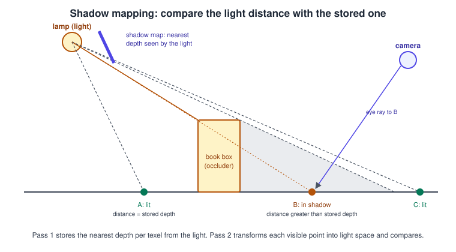
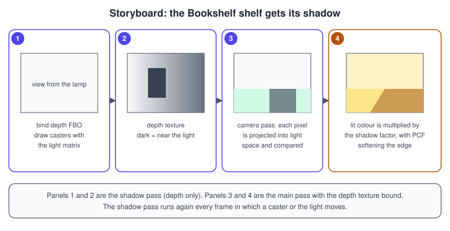
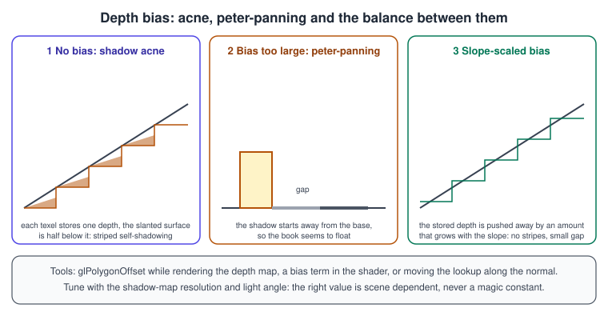

Shadow Mapping
|
This content was generated with the assistance of AI and should be verified against the official documentation before being relied on in production. |
A shadow is the absence of light, and a rasteriser has no built-in way to know whether something stands between a surface point and the lamp. Shadow mapping solves that with two passes: first render the scene from the light’s point of view and keep only the depth, then render from the camera and, for every pixel, ask whether the light could see that point. It is the standard real-time shadow technique in every API. This page shows the technique with OpenGL calls: the depth texture and its comparison mode, the light matrices, the bias that prevents self-shadowing, filtering for soft edges, the common variants, and a complete program that adds a lamp shadow to the Bookshelf scene. The general theory, including ray-traced and baked alternatives, is in Shadows and Global Illumination.
The facts were checked in November 2026. The versions documented are OpenGL 4.6 core (GLSL 4.60) and, where it differs,
OpenGL ES 3.2 (GLSL ES 3.20). Depth textures, hardware depth comparison and glPolygonOffset have been core since OpenGL 3.0 and
ES 3.0; the direct-state-access calls used in the example are core since OpenGL 4.5 and are not available in ES. The code needs
a desktop GPU and driver with OpenGL 4.5 or later, GLFW, GLM and a glad2 loader for 4.6 core, set up as described in
Getting started on the desktop. It builds on
Framebuffers and render to texture for the off-screen target
and on Lighting with Blinn-Phong for the shading it modulates.
The algorithm

-
Shadow pass. Render every shadow-casting object from the light, with a depth attachment only. The result is the shadow map: for each texel, the distance from the light to the nearest surface in that direction.
-
Main pass. Render the scene normally from the camera. For each fragment, transform its world position by the same light matrices used in step 1, giving a texel position and a depth \( d \) as seen from the light. Compare \( d \) with the stored depth \( z \). If \( d \) is larger (by more than a small bias), something is closer to the light, so the fragment is in shadow.
The transform from world space to shadow-map coordinates is:
\[ \mathbf{ p }_{ clip } = P_L \, V_L \, \mathbf{ p }_{ world }, \qquad \mathbf{ n } = \frac{ \mathbf{ p }_{ clip }.xyz }{ \mathbf{ p }_{ clip }.w }, \qquad (u, v, d) = \tfrac{ 1 }{ 2 } \mathbf{ n } + \tfrac{ 1 }{ 2 } \]
where \( V_L \) looks from the light toward the scene and \( P_L \) is the light’s projection. The last step maps normalised device coordinates in \([-1, 1]\) to texture coordinates and depth in \([0, 1]\), which is the default depth range of OpenGL. A directional light (the sun, or a distant lamp) uses an orthographic projection; a spot light uses a perspective projection; a point light needs six perspective views, one per cube face. Coordinate-space chains are covered in Coordinate Spaces and Transforms.

The shadow map: a depth texture and an FBO
The shadow map is a texture with a depth internal format attached to the GL_DEPTH_ATTACHMENT point of an FBO that has no colour
attachments. Three details make it work as a shadow map:
-
Comparison mode. Setting
GL_TEXTURE_COMPARE_MODEtoGL_COMPARE_REF_TO_TEXTUREandGL_TEXTURE_COMPARE_FUNCtoGL_LEQUALmakes the sampler compare a reference value you supply with the stored depth and return 1.0 when the reference is less than or equal to the stored value, else 0.0. In GLSL the texture is declaredsampler2DShadow, andtexture(sampler, vec3(u, v, reference))returns that result. -
Linear filtering. With
GL_LINEARthe comparison is done for the four neighbouring texels first and the results are bilinearly filtered, which gives a free 2 by 2 percentage-closer filter. Filtering the depth values themselves before comparing would be wrong, which is why the hardware compares first. -
Border colour. Points outside the light’s frustum should be lit. With
GL_CLAMP_TO_BORDERand a border colour of 1.0 the stored depth outside the map is the far plane, so the comparison passes. Also test the depth: fragments beyond the light’s far plane have \( d > 1 \) and must be treated as lit.
constexpr int kShadowSize = 2048;
GLuint shadowTex = 0, shadowFbo = 0;
glCreateTextures(GL_TEXTURE_2D, 1, &shadowTex);
glTextureStorage2D(shadowTex, 1, GL_DEPTH_COMPONENT32F, kShadowSize, kShadowSize);
glTextureParameteri(shadowTex, GL_TEXTURE_MIN_FILTER, GL_LINEAR);
glTextureParameteri(shadowTex, GL_TEXTURE_MAG_FILTER, GL_LINEAR);
glTextureParameteri(shadowTex, GL_TEXTURE_WRAP_S, GL_CLAMP_TO_BORDER);
glTextureParameteri(shadowTex, GL_TEXTURE_WRAP_T, GL_CLAMP_TO_BORDER);
const float border[4] = {1.0f, 1.0f, 1.0f, 1.0f};
glTextureParameterfv(shadowTex, GL_TEXTURE_BORDER_COLOR, border);
glTextureParameteri(shadowTex, GL_TEXTURE_COMPARE_MODE, GL_COMPARE_REF_TO_TEXTURE);
glTextureParameteri(shadowTex, GL_TEXTURE_COMPARE_FUNC, GL_LEQUAL);
glCreateFramebuffers(1, &shadowFbo);
glNamedFramebufferTexture(shadowFbo, GL_DEPTH_ATTACHMENT, shadowTex, 0);
glNamedFramebufferDrawBuffer(shadowFbo, GL_NONE); // depth only
glNamedFramebufferReadBuffer(shadowFbo, GL_NONE);
if (glCheckNamedFramebufferStatus(shadowFbo, GL_FRAMEBUFFER) != GL_FRAMEBUFFER_COMPLETE) {
// handle the error
}Source: OpenGL Wiki: Framebuffer Object
The map resolution decides the sharpness. A 2048 by 2048 map covering a 12-unit wide region has a texel about 6 millimetres wide if a unit is a metre, which is fine for a desk lamp; the same map covering a 200-metre outdoor view has 10-centimetre texels, and the shadows become blocky. That is the reason for cascades, described below.
Choosing the light matrices
For the lamp above the Bookshelf, an orthographic projection fits the scene tightly. Fit the box to the casters you actually have instead of using a huge region: a smaller box means a higher texel density for the same resolution.
glm::vec3 lightPos = glm::vec3(std::cos(t) * 4.0f, 5.0f, std::sin(t) * 4.0f);
glm::mat4 lightView = glm::lookAt(lightPos, glm::vec3(0.0f), glm::vec3(0, 1, 0));
glm::mat4 lightProj = glm::ortho(-6.0f, 6.0f, -6.0f, 6.0f, 1.0f, 14.0f); // left, right, bottom, top, near, far
glm::mat4 lightVP = lightProj * lightView;Source: OpenGL 4 reference: glViewport
The near and far planes of the light projection should enclose all casters and receivers, tightly. Depth precision is spread over
that range, so a needless far plane makes bias harder to tune. For a spot light, replace glm::ortho with
glm::perspective(coneAngle, 1.0f, near, far). When the light or the casters move slowly, rendering the shadow map every frame
is still the norm; skip it only for fully static scenes.
Camera-following lights jitter ("shimmer") when the orthographic box moves by fractions of a texel. Snap the box centre to multiples of the world-space texel size, and keep the box size constant, so edges of static shadows stay still when the camera moves.
Depth bias
The stored depth has the resolution of one texel, but the surface being compared against it is sloped inside that texel, so roughly half of the surface lies behind the stored value and shadows itself, producing stripes called shadow acne. Pushing the surface away from the light by a small amount before comparing removes acne; pushing too far separates the shadow from its caster and the object seems to float (peter-panning).

There are three complementary tools, and robust engines use a combination:
| Tool | How it works | Notes |
|---|---|---|
|
With |
Scales with the slope automatically. Typical starting values are 2.0 and 4.0. The depth map itself is biased, so every shader that samples it benefits. |
Constant or slope-scaled bias in the shader |
Subtract a bias from the reference depth: for example \( b = \max(b_{ max } (1 - N \cdot L), b_{ min }) \). |
Easy to tune per light. A fixed value only works at one resolution and light angle. |
Normal offset |
Move the receiver’s world position along its normal by about one texel before projecting. |
Removes acne without a depth gap, handles grazing angles well, but can slightly shrink thin shadows. Use it together with a small bias. |
Rendering only back faces into the shadow map (culling front faces with glCullFace(GL_FRONT)) is a well-known alternative.
It moves the stored depth to the rear of closed objects, which hides acne on lit faces, but it fails for open or thin geometry
such as a floor plane, a page, or a single-sided card, which have no back face to render. For that reason the example uses a
polygon offset and a normal offset instead.
Complete example: a lamp casting shadows on the Bookshelf
The program draws a floor and five standing book boxes, lit by a lamp that circles above the shelf. Pass one fills a 2048 by
2048 depth map; pass two draws the scene with a 3 by 3 PCF kernel on top of the hardware 2 by 2 filtering. Press the left and
right keys to change the bias, and N to switch the normal offset on and off, so you can see each effect.
// shadow.cpp - directional lamp with a shadow map and PCF on the Bookshelf scene.
#include <glad/gl.h>
#include <GLFW/glfw3.h>
#include <glm/glm.hpp>
#include <glm/gtc/matrix_transform.hpp>
#include <glm/gtc/type_ptr.hpp>
#include <array>
#include <cmath>
#include <cstdio>
#include <cstdlib>
#include <utility>
#include <vector>
namespace {
constexpr const char* kDepthVs = R"(#version 460 core
layout(location = 0) in vec3 aPos;
layout(location = 0) uniform mat4 uLightMvp;
void main() { gl_Position = uLightMvp * vec4(aPos, 1.0); }
)";
// An empty fragment shader: only depth is written. (OpenGL ES requires one.)
constexpr const char* kDepthFs = R"(#version 460 core
void main() {}
)";
constexpr const char* kSceneVs = R"(#version 460 core
layout(location = 0) in vec3 aPos;
layout(location = 1) in vec3 aNormal;
layout(location = 0) uniform mat4 uMvp;
layout(location = 4) uniform mat4 uModel; // a mat4 takes 4 uniform locations
out vec3 vWorldPos;
out vec3 vNormal;
void main() {
vec4 world = uModel * vec4(aPos, 1.0);
vWorldPos = world.xyz;
vNormal = mat3(transpose(inverse(uModel))) * aNormal;
gl_Position = uMvp * vec4(aPos, 1.0);
}
)";
constexpr const char* kSceneFs = R"(#version 460 core
in vec3 vWorldPos;
in vec3 vNormal;
layout(binding = 0) uniform sampler2DShadow uShadow; // comparison sampler
layout(location = 8) uniform mat4 uLightVP;
layout(location = 12) uniform vec3 uLightPos;
layout(location = 13) uniform vec3 uColor;
layout(location = 14) uniform float uBias;
layout(location = 15) uniform float uNormalOffset; // in world units, 0 = off
layout(location = 0) out vec4 outColor;
float shadowFactor(vec3 worldPos, vec3 n, vec3 l) {
// Normal offset: slide the lookup along the surface normal, more at grazing angles.
vec3 p = worldPos + n * uNormalOffset * (1.0 - max(dot(n, l), 0.0));
vec4 lc = uLightVP * vec4(p, 1.0);
vec3 proj = lc.xyz / lc.w * 0.5 + 0.5;
if (proj.z > 1.0) return 1.0; // beyond the light's far plane
float refDepth = proj.z - uBias * (1.0 - max(dot(n, l), 0.0)) - 0.0002;
vec2 texel = 1.0 / vec2(textureSize(uShadow, 0));
float sum = 0.0;
for (int y = -1; y <= 1; ++y)
for (int x = -1; x <= 1; ++x)
sum += texture(uShadow, vec3(proj.xy + vec2(x, y) * texel, refDepth)); // 0 or 1, bilinear
return sum / 9.0;
}
void main() {
vec3 n = normalize(vNormal);
vec3 l = normalize(uLightPos - vWorldPos);
float diff = max(dot(n, l), 0.0);
float lit = shadowFactor(vWorldPos, n, l);
vec3 c = uColor * (0.18 + 0.82 * diff * lit);
outColor = vec4(pow(c, vec3(1.0 / 2.2)), 1.0);
}
)";
void APIENTRY debugCallback(GLenum, GLenum type, GLuint, GLenum severity, GLsizei,
const GLchar* msg, const void*) {
if (severity == GL_DEBUG_SEVERITY_NOTIFICATION) return;
std::fprintf(stderr, "GL %s: %s\n", type == GL_DEBUG_TYPE_ERROR ? "error" : "message", msg);
}
GLuint compile(GLenum type, const char* src) {
GLuint s = glCreateShader(type);
glShaderSource(s, 1, &src, nullptr);
glCompileShader(s);
GLint ok = 0;
glGetShaderiv(s, GL_COMPILE_STATUS, &ok);
if (!ok) {
char log[2048];
glGetShaderInfoLog(s, sizeof log, nullptr, log);
std::fprintf(stderr, "shader error:\n%s\n", log);
std::exit(1);
}
return s;
}
GLuint makeProgram(const char* vs, const char* fs) {
GLuint v = compile(GL_VERTEX_SHADER, vs), f = compile(GL_FRAGMENT_SHADER, fs);
GLuint p = glCreateProgram();
glAttachShader(p, v);
glAttachShader(p, f);
glLinkProgram(p);
GLint ok = 0;
glGetProgramiv(p, GL_LINK_STATUS, &ok);
if (!ok) {
char log[2048];
glGetProgramInfoLog(p, sizeof log, nullptr, log);
std::fprintf(stderr, "link error:\n%s\n", log);
std::exit(1);
}
glDeleteShader(v);
glDeleteShader(f);
return p;
}
void makeCube(std::vector<float>& verts, std::vector<unsigned>& idx) {
for (int f = 0; f < 6; ++f) {
int axis = f / 2;
float sign = (f % 2 == 0) ? 1.0f : -1.0f;
glm::vec3 n(0.0f), u(0.0f), v(0.0f);
n[axis] = sign;
u[(axis + 1) % 3] = 1.0f;
v[(axis + 2) % 3] = 1.0f;
if (sign < 0.0f) std::swap(u, v);
const glm::vec3 corners[4] = {n * 0.5f + (-u - v) * 0.5f, n * 0.5f + (u - v) * 0.5f,
n * 0.5f + (u + v) * 0.5f, n * 0.5f + (-u + v) * 0.5f};
unsigned base = static_cast<unsigned>(verts.size() / 6);
for (const glm::vec3& c : corners) verts.insert(verts.end(), {c.x, c.y, c.z, n.x, n.y, n.z});
idx.insert(idx.end(), {base, base + 1, base + 2, base, base + 2, base + 3});
}
}
struct Object {
glm::mat4 model;
glm::vec3 color;
bool castsShadow;
};
float gBias = 0.0015f;
float gNormalOffset = 0.02f;
void onKey(GLFWwindow* win, int key, int, int action, int) {
if (action == GLFW_RELEASE) return;
if (key == GLFW_KEY_ESCAPE) glfwSetWindowShouldClose(win, GLFW_TRUE);
if (key == GLFW_KEY_RIGHT) gBias += 0.0005f;
if (key == GLFW_KEY_LEFT && gBias > 0.0005f) gBias -= 0.0005f;
if (key == GLFW_KEY_N && action == GLFW_PRESS) gNormalOffset = gNormalOffset > 0.0f ? 0.0f : 0.02f;
}
} // namespace
int main() {
if (!glfwInit()) return 1;
glfwWindowHint(GLFW_CONTEXT_VERSION_MAJOR, 4);
glfwWindowHint(GLFW_CONTEXT_VERSION_MINOR, 6);
glfwWindowHint(GLFW_OPENGL_PROFILE, GLFW_OPENGL_CORE_PROFILE);
glfwWindowHint(GLFW_OPENGL_DEBUG_CONTEXT, GLFW_TRUE);
GLFWwindow* win = glfwCreateWindow(1024, 640, "Bookshelf GL: shadow mapping", nullptr, nullptr);
if (!win) { glfwTerminate(); return 1; }
glfwMakeContextCurrent(win);
glfwSwapInterval(1);
glfwSetKeyCallback(win, onKey);
if (!gladLoadGL(glfwGetProcAddress)) { std::fprintf(stderr, "glad failed\n"); return 1; }
glEnable(GL_DEBUG_OUTPUT);
glDebugMessageCallback(debugCallback, nullptr);
GLuint depthProg = makeProgram(kDepthVs, kDepthFs);
GLuint sceneProg = makeProgram(kSceneVs, kSceneFs);
// Geometry: one cube mesh reused for the floor and the books.
std::vector<float> verts;
std::vector<unsigned> idx;
makeCube(verts, idx);
GLuint vbo, ebo, vao;
glCreateBuffers(1, &vbo);
glNamedBufferStorage(vbo, static_cast<GLsizeiptr>(verts.size() * sizeof(float)), verts.data(), 0);
glCreateBuffers(1, &ebo);
glNamedBufferStorage(ebo, static_cast<GLsizeiptr>(idx.size() * sizeof(unsigned)), idx.data(), 0);
glCreateVertexArrays(1, &vao);
glVertexArrayVertexBuffer(vao, 0, vbo, 0, 6 * sizeof(float));
glVertexArrayElementBuffer(vao, ebo);
glEnableVertexArrayAttrib(vao, 0);
glVertexArrayAttribFormat(vao, 0, 3, GL_FLOAT, GL_FALSE, 0);
glVertexArrayAttribBinding(vao, 0, 0);
glEnableVertexArrayAttrib(vao, 1);
glVertexArrayAttribFormat(vao, 1, 3, GL_FLOAT, GL_FALSE, 3 * sizeof(float));
glVertexArrayAttribBinding(vao, 1, 0);
// Scene description: a floor and five books standing on it.
std::vector<Object> scene;
scene.push_back({glm::scale(glm::translate(glm::mat4(1.0f), glm::vec3(0, -0.05f, 0)),
glm::vec3(10.0f, 0.1f, 10.0f)),
glm::vec3(0.55f, 0.42f, 0.30f), false});
const glm::vec3 colors[5] = {{0.70f, 0.12f, 0.14f}, {0.12f, 0.35f, 0.70f}, {0.15f, 0.55f, 0.28f},
{0.80f, 0.60f, 0.15f}, {0.50f, 0.20f, 0.60f}};
for (int i = 0; i < 5; ++i) {
float h = 0.9f + 0.12f * float(i % 3);
glm::mat4 m = glm::translate(glm::mat4(1.0f), glm::vec3(-1.0f + 0.5f * float(i), h * 0.5f, 0.0f));
m = glm::scale(m, glm::vec3(0.28f, h, 0.7f));
scene.push_back({m, colors[i], true});
}
// Shadow map and its FBO.
constexpr int kShadowSize = 2048;
GLuint shadowTex = 0, shadowFbo = 0;
glCreateTextures(GL_TEXTURE_2D, 1, &shadowTex);
glTextureStorage2D(shadowTex, 1, GL_DEPTH_COMPONENT32F, kShadowSize, kShadowSize);
glTextureParameteri(shadowTex, GL_TEXTURE_MIN_FILTER, GL_LINEAR);
glTextureParameteri(shadowTex, GL_TEXTURE_MAG_FILTER, GL_LINEAR);
glTextureParameteri(shadowTex, GL_TEXTURE_WRAP_S, GL_CLAMP_TO_BORDER);
glTextureParameteri(shadowTex, GL_TEXTURE_WRAP_T, GL_CLAMP_TO_BORDER);
const float border[4] = {1.0f, 1.0f, 1.0f, 1.0f};
glTextureParameterfv(shadowTex, GL_TEXTURE_BORDER_COLOR, border);
glTextureParameteri(shadowTex, GL_TEXTURE_COMPARE_MODE, GL_COMPARE_REF_TO_TEXTURE);
glTextureParameteri(shadowTex, GL_TEXTURE_COMPARE_FUNC, GL_LEQUAL);
glCreateFramebuffers(1, &shadowFbo);
glNamedFramebufferTexture(shadowFbo, GL_DEPTH_ATTACHMENT, shadowTex, 0);
glNamedFramebufferDrawBuffer(shadowFbo, GL_NONE);
glNamedFramebufferReadBuffer(shadowFbo, GL_NONE);
if (glCheckNamedFramebufferStatus(shadowFbo, GL_FRAMEBUFFER) != GL_FRAMEBUFFER_COMPLETE) {
std::fprintf(stderr, "shadow framebuffer incomplete\n");
return 1;
}
glEnable(GL_DEPTH_TEST);
while (!glfwWindowShouldClose(win)) {
glfwPollEvents();
int fbw = 0, fbh = 0;
glfwGetFramebufferSize(win, &fbw, &fbh);
if (fbw == 0 || fbh == 0) { glfwWaitEvents(); continue; }
const float t = static_cast<float>(glfwGetTime()) * 0.4f;
const glm::vec3 lightPos(std::cos(t) * 4.0f, 5.0f, std::sin(t) * 4.0f);
const glm::mat4 lightVP = glm::ortho(-6.0f, 6.0f, -6.0f, 6.0f, 1.0f, 14.0f) *
glm::lookAt(lightPos, glm::vec3(0.0f), glm::vec3(0, 1, 0));
// Pass 1: depth from the light.
glBindFramebuffer(GL_DRAW_FRAMEBUFFER, shadowFbo);
glViewport(0, 0, kShadowSize, kShadowSize);
const float one = 1.0f;
glDepthMask(GL_TRUE);
glClearNamedFramebufferfv(shadowFbo, GL_DEPTH, 0, &one);
glEnable(GL_POLYGON_OFFSET_FILL);
glPolygonOffset(2.0f, 4.0f);
glUseProgram(depthProg);
glBindVertexArray(vao);
for (const Object& o : scene) {
if (!o.castsShadow) continue;
glm::mat4 mvp = lightVP * o.model;
glUniformMatrix4fv(0, 1, GL_FALSE, glm::value_ptr(mvp));
glDrawElements(GL_TRIANGLES, static_cast<GLsizei>(idx.size()), GL_UNSIGNED_INT, nullptr);
}
glDisable(GL_POLYGON_OFFSET_FILL);
// Pass 2: the lit scene from the camera.
glBindFramebuffer(GL_DRAW_FRAMEBUFFER, 0);
glViewport(0, 0, fbw, fbh);
glClearColor(0.08f, 0.09f, 0.12f, 1.0f);
glClear(GL_COLOR_BUFFER_BIT | GL_DEPTH_BUFFER_BIT);
const glm::mat4 vp =
glm::perspective(glm::radians(45.0f), float(fbw) / float(fbh), 0.1f, 60.0f) *
glm::lookAt(glm::vec3(0, 3.5f, 6.5f), glm::vec3(0, 0.4f, 0), glm::vec3(0, 1, 0));
glUseProgram(sceneProg);
glBindTextureUnit(0, shadowTex);
glUniformMatrix4fv(8, 1, GL_FALSE, glm::value_ptr(lightVP));
glUniform3fv(12, 1, glm::value_ptr(lightPos));
glUniform1f(14, gBias);
glUniform1f(15, gNormalOffset);
for (const Object& o : scene) {
glm::mat4 mvp = vp * o.model;
glUniformMatrix4fv(0, 1, GL_FALSE, glm::value_ptr(mvp));
glUniformMatrix4fv(4, 1, GL_FALSE, glm::value_ptr(o.model));
glUniform3fv(13, 1, glm::value_ptr(o.color));
glDrawElements(GL_TRIANGLES, static_cast<GLsizei>(idx.size()), GL_UNSIGNED_INT, nullptr);
}
glfwSwapBuffers(win);
}
glfwTerminate();
return 0;
}Use the CMake file from Framebuffers and render to texture,
changing the source file name to shadow.cpp.
Things to try in the program: set gNormalOffset to 0 and watch stripes appear on the floor at grazing light angles; lower the
bias to zero to see acne on the book fronts; raise the polygon offset factor to 10 to see the shadows detach from the book bases.
Percentage-closer filtering and softer shadows
A binary comparison gives hard, aliased edges that follow the shadow-map texels. Percentage-closer filtering (PCF) takes several comparisons around the lookup point and averages the 0 and 1 results, giving a fraction of the texels that pass. It filters the comparison results rather than the depths, which is what the hardware does for you with linear filtering on a comparison sampler. The example takes 3 by 3 taps, so the effective kernel is about 4 by 4 texels.
Other approaches, from cheap to expensive:
-
Rotated Poisson-disk or interleaved-gradient-noise taps replace the regular grid with a few well-distributed samples whose pattern is rotated per pixel, trading banding for noise that temporal anti-aliasing removes.
-
Percentage-closer soft shadows (PCSS) search the map for blockers, estimate the penumbra width from the distance between blocker and receiver, and scale the PCF kernel accordingly, so contact shadows are sharp and distant ones soft.
-
Variance and exponential shadow maps store moments of the depth distribution in a colour texture, which can be blurred and mip-mapped, at the price of light bleeding and extra memory.
None of these needs a different set of OpenGL calls: they change the fragment shader and the texture format.
Variants
-
Cascaded shadow maps for large outdoor scenes split the camera frustum into slices and give each its own map, so near surfaces get a high texel density and distant ones a coarse one. Splits are commonly chosen with a blend of logarithmic and uniform spacing: \( z_i = \lambda \, n \, (f / n)^{ i / N } + (1 - \lambda)\bigl(n + (f - n)\, i / N\bigr) \), where \( n \) and \( f \) are the camera planes, \( N \) the number of cascades and \( \lambda \) in \([0, 1]\) the blend. The maps are layers of a
GL_TEXTURE_2D_ARRAYwithGL_COMPARE_REF_TO_TEXTURE, sampled throughsampler2DArrayShadow, and the fragment shader picks the layer from the view-space depth. A single draw can fill all layers when a geometry shader (or the vertex shader’sgl_Layerin OpenGL 4.6) sets the layer, using layered rendering as described in Framebuffers and render to texture. Stabilise each cascade with texel snapping so shadows do not shimmer. -
Spot lights use a perspective light projection and otherwise the same code.
-
Point lights need a cube map. Render six faces with a 90 degree field of view, either one pass per face with
glNamedFramebufferTextureLayeror in one pass with layered rendering. Perspective depth in a cube map is awkward to bias, so many engines instead store the linear distance to the light in a single-channel colour cube map, or usesamplerCubeShadowwith a reference computed from the major axis of the lookup direction. -
Reverse-Z with a floating-point depth map and
glClipControl(GL_LOWER_LEFT, GL_ZERO_TO_ONE)(OpenGL 4.5) gives better depth precision for perspective lights; the comparison function then becomesGL_GEQUAL.
OpenGL ES differences
OpenGL ES 3.0 and later support depth textures, sampler2DShadow and the comparison mode in the core, so the technique is the
same. The practical differences are:
| Topic | OpenGL 4.6 | OpenGL ES 3.0 to 3.2 |
|---|---|---|
Object calls |
DSA ( |
|
Texture border |
|
Core in ES 3.2; ES 3.0 and 3.1 need |
Depth formats |
16, 24, 32 and 32F |
|
Fragment shader in the depth pass |
Optional |
Required: write an empty |
Precision qualifiers |
None |
Declare |
Cost |
Desktop GPUs are bandwidth-rich |
On tile-based mobile GPUs a depth-only pass is cheap, but sampling a large shadow map for every pixel is not. Use 1024 to 2048 texels, one cascade or two, and few PCF taps. |
A GLSL ES variant of the lookup:
#version 320 es
precision highp float;
precision highp sampler2DShadow;
uniform sampler2DShadow uShadow;
in vec4 vLightPos; // lightVP * worldPos, computed in the vertex shader
out vec4 outColor;
void main() {
vec3 proj = vLightPos.xyz / vLightPos.w * 0.5 + 0.5;
bool inside = all(greaterThanEqual(proj.xy, vec2(0.0))) &&
all(lessThanEqual(proj.xy, vec2(1.0))) && proj.z <= 1.0;
float lit = inside ? texture(uShadow, vec3(proj.xy, proj.z - 0.002)) : 1.0;
outColor = vec4(vec3(0.2 + 0.8 * lit), 1.0);
}See GLSL ES and portability and OpenGL ES on Android for extension queries and device limits.
Performance notes
-
The shadow pass costs a second geometry pass. Cull casters against the light frustum, use level-of-detail meshes, and skip small objects that cast no visible shadow.
-
The pass is depth-only: disable colour writes by having no colour attachment, avoid alpha-tested materials where possible (they disable some early-depth optimisations), and use a trivial fragment shader.
-
Use the smallest depth precision that works:
GL_DEPTH_COMPONENT16is acceptable for tight ortho boxes on mobile,24or32Fotherwise. -
Re-render a static shadow map only when something changes. Split static and dynamic casters into two maps if useful.
-
Keep the PCF kernel small; use 9 to 16 taps at most, and rely on hardware bilinear comparison and noise plus temporal accumulation for more.
-
Invalidate the depth attachment of the main pass, not of the shadow map, which the main pass still needs.
Common mistakes
| Symptom | Likely cause |
|---|---|
Shadows appear only at the screen centre or all black |
Texture coordinates were not mapped from \([-1, 1]\) to \([0, 1]\), or the divide by |
Everything is in shadow |
The comparison mode is not set, so the sampler returns raw depth in the red channel and the compare is not performed; or the texture is bound to the wrong unit, or the sampler is declared |
Striped surfaces (acne) |
Bias too small or no polygon offset; the shadow map is too low resolution for the light box. |
Shadows are detached from objects |
Bias too large; apply the offset to the map or in the shader, not both at full strength. |
Shadow edge crawls when the camera moves |
The light box moves in sub-texel steps; snap it to the texel grid and keep a constant size. |
Light leaks at corners where two walls meet |
Normal offset too small, or the shadow map does not include the thin caster. |
Black shadow pass on some drivers |
The depth FBO lists a draw buffer; set draw and read buffers to |
What older guides get wrong
| Older source | What it shows | What to use today |
|---|---|---|
OpenGL SuperBible 4th edition, chapter 14 |
|
Core depth textures with |
OpenGL ES 2.0 Programming Guide, chapter 13, and the Wiley ES 2.0 book chapter 10 |
ES 2.0 has no depth textures without |
ES 3.0 and later have depth textures and hardware comparison. Packing depth into colour is only needed on ES 2.0 devices, which are no longer targets of current Android or iOS releases. |
OpenGL ES 3.0 Programming Guide, chapter 14 |
Shadow mapping with a depth texture, |
Still valid on ES 3.0; add the ES 3.2 border-clamp support and precision qualifiers noted above. |
References
-
OpenGL 4 reference pages: glTexParameter, glPolygonOffset, glFramebufferTexture, texture, glClipControl
-
OpenGL ES 3 reference pages: texture
-
GLSL 4.60 specification: https://registry.khronos.org/OpenGL/specs/gl/GLSLangSpec.4.60.html
-
OpenGL Wiki: Framebuffer Object, Texture
-
Books used for the comparison with older guides: OpenGL SuperBible, 4th edition, OpenGL ES 2.0 Programming Guide, OpenGL ES 3.0 Programming Guide, Game and Graphics Programming for iOS and Android with OpenGL ES 2.0. See also the section bibliography